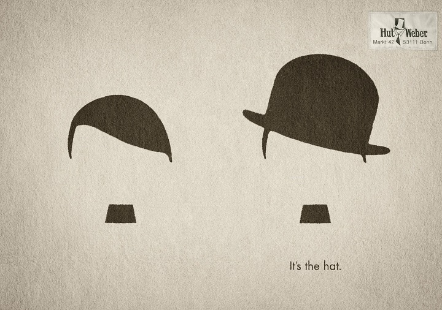

Soy un joven entusiasta por el diseño gráfico, actualmente estudiante del Máster Profesional en Diseño Gráfico y Web en la escuela CEI. Vivo en Valencia y estoy especializado en Branding e Ilustraciones.
He creado esta página para poder exhibir mis rabajos y proyectos y para dar servicio a cual empresa o persona que precise de la ayuda de un diseñador gráfico y/o web.
Parte del proceso creativo se basa en entender tu sector y la audiencia a la que te diriges. No siempre lo que uno cree es lo que necesita el proyecto, por ello primero realizo un estudio y análisis del sector, la competencia y los puntos de contacto con tu audiencia. Información fundamental para conseguir una solución que se adapte como un guante a las necesidades de tu marca
Si estás pensando en reforzar la imagen de tu empresa, rediseñar tu marca, tener una página en internet, necesitas una ilustración para un regalo, etc... No dudes en contactarme y obtendrás lo que necesites.
 Contactar con Nacho
Contactar con Nacho